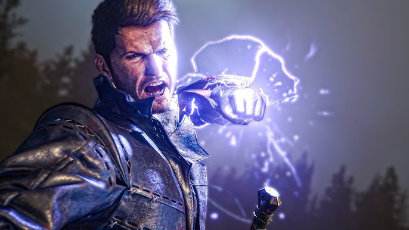

Final Fantasy XVI[b] is a 2023 action role-playing game developed and published by Square Enix. The sixteenth main installment in the Final Fantasy series, it was released for the PlayStation 5. The game features segmented open environments and an action-based combat system involving melee and magic-based attacks. There are recurring series features including Chocobos for area travel, and summoned monsters called Eikons, which are both fought as bosses and used through channelling their power in combat.
Clive Rosfield

Clive Rosfield is the main protagonist of Final Fantasy XVI. He is the Archduke of Rosaria's eldest son, Joshua's brother, and the Dominant of the dark Eikon, Ifrit.
Cidolfus Telamon
Cidolfus "Cid" Telamon is a major character in Final Fantasy XVI. He is the Dominant of Ramuh who leads a movement that seeks to liberate Bearers and Dominants from servitude.
Eikons are powerful, god-like beings that are native to the world of Valisthea in Final Fantasy XVI. They are both worshipped and feared by the people of the realm as protective deities and used as weapons of war. Each Eikon has a respective Dominant, a human host who can call upon their Eikon's power to do battle.